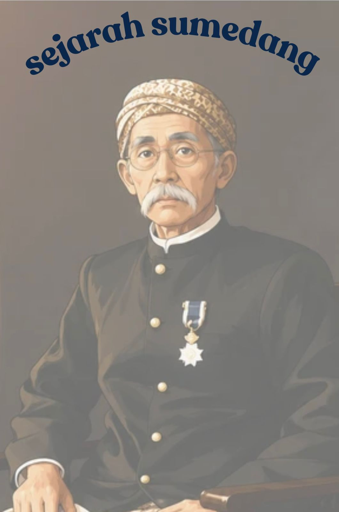

Sumedang Larang merupakan kerajaan bersejarah di Jawa Barat yang berdiri sejak abad ke-8. Awalnya kerajaan ini bernama Tembong Agung dan didirikan oleh Prabu Aji Putih di wilayah Citembong Karang, yang kini termasuk Kabupaten Sumedang. Pada masa Prabu Tajimalela, nama kerajaan berubah menjadi Himbar Buana yang berarti “menerangi alam”. Dari ucapan terkenalnya, “Insun medal, insun madangan” (aku dilahirkan, aku menerangi), lahirlah nama Sumedang yang digunakan hingga sekarang. Dalam perkembangannya, Sumedang Larang menjadi bagian dari Kerajaan Sunda-Galuh yang kemudian bergabung ke dalam Kerajaan Pajajaran.Memasuki pertengahan abad ke-16, Islam mulai berkembang di Sumedang Larang melalui pemerintahan Ratu Pucuk Umun dan Pangeran Santri. Setelah Kerajaan Pajajaran runtuh akibat serangan Kesultanan Banten, Sumedang Larang di bawah Prabu Geusan Ulun menyatakan diri sebagai penerus Pajajaran dan mencapai puncak kejayaan dengan wilayah kekuasaan yang hampir mencakup seluruh Jawa Barat. Namun pada tahun 1620, di masa Prabu Suriadiwangsa, kerajaan ini masuk ke dalam kekuasaan Kesultanan Mataram dan berubah status menjadi kabupaten. Hingga kini, jejak kejayaan Sumedang Larang masih tersimpan di Museum Prabu Geusan Ulun melalui berbagai peninggalan seperti Mahkota Binokasih, senjata pusaka, naskah kuno, atribut kerajaan, dan perangkat gamelan.